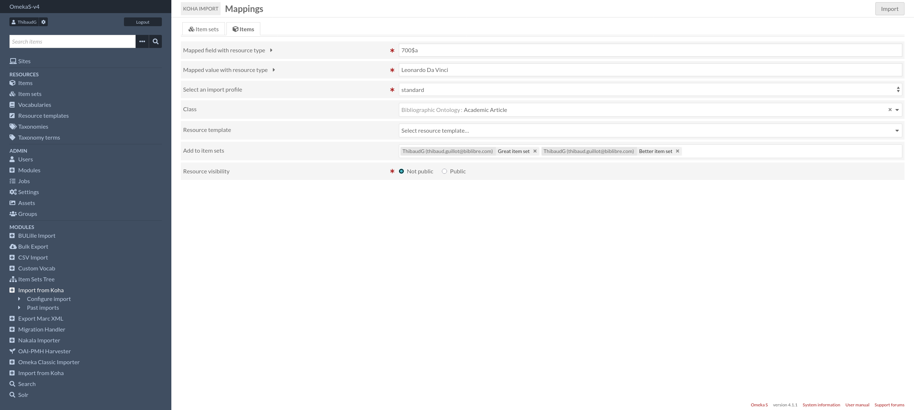
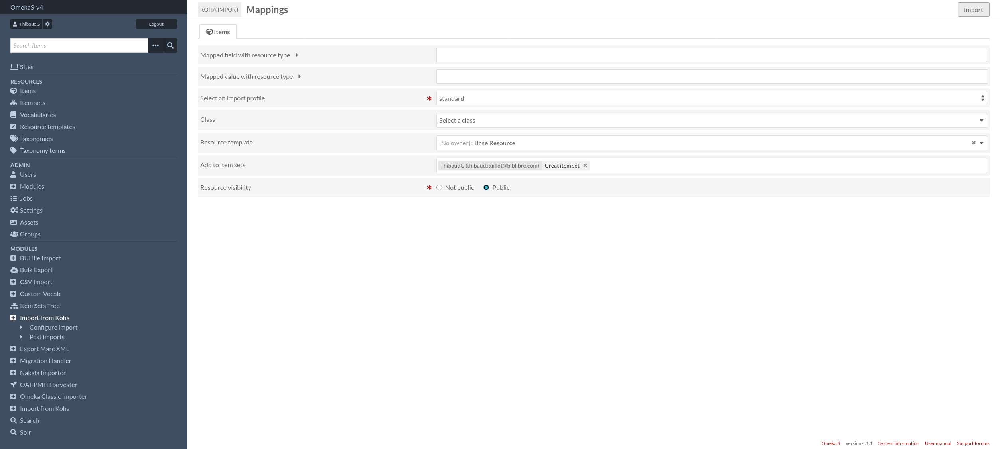
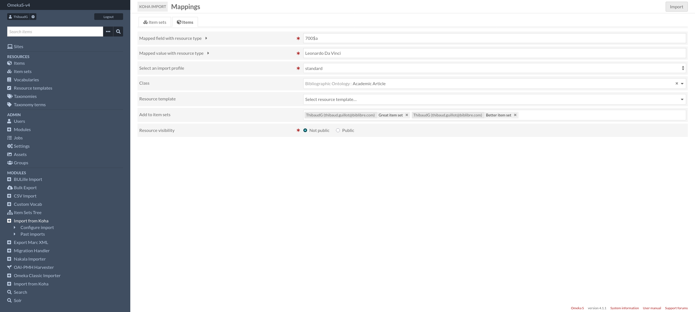
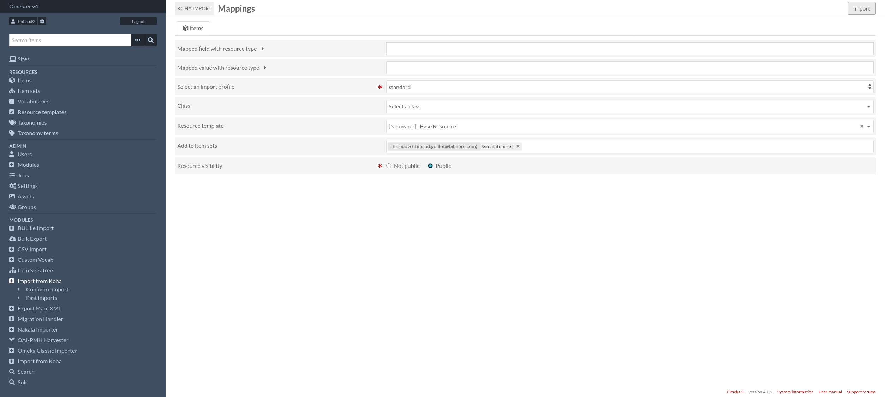

Features
Start an import

In the first view, several options are available:
Import name: just to specify and easily identify your import (can be duplicated)
- Media ingest file:
Local server as for the usual workflow, specify the path to the folder where your media is stored. If no path is specified, media ingestion will be ignored.
S3 bucket: you can choose this option if the media is stored remotely on a bucket, but don’t forget to add your configuration in the module.config.php file.
Type of resource to import (required).
Sites: add the sites for the resources to be imported.
Owner (required)
Since: specified date formatted as “YYYY-mm-dd HH:MM:SS” to filter resources.
Force: even if the resource (identified by the biblionumber) has already been imported and its update date is equal to today’s date, you can force the import by checking this box.
Delete: used to delete an omeka-s resource if the corresponding resource in koha is no longer to be exported.
Configuration by resource type
After initiating the configuration of a new import, you can then define parameters specific to each type of resource. Configurations differ according to the resource type tab you are in. You will therefore find some common parameters:
Mapped field/value with resource type: you’ll be able to filter resources, to transform “only” the corresponding resources, apply to the data field on the “field$subfield” format with a value strictly equal to the entry below.
Note
Note that these fields are mandatory if you have selected more than one type of resource to import. Otherwise, if these parameters are not filled in, all records passing through the import will be transformed into OmekaS resources of the specified type.
Select an import profile: import profiles are used to apply mappings between Koha fields and OmekaS properties. You can therefore customize the mapping according to the type of resource.
Classes and resource templates: choose different parameters for different resource types.
Resource visibility (required)
Add to item sets: only for ‘item’ resources.
 



Past imports
Resume past imports on a dedicated page.
(Admin > KohaImport > Past imports)
And you’ve got also possibility to view the configuration applied by clicking on ….